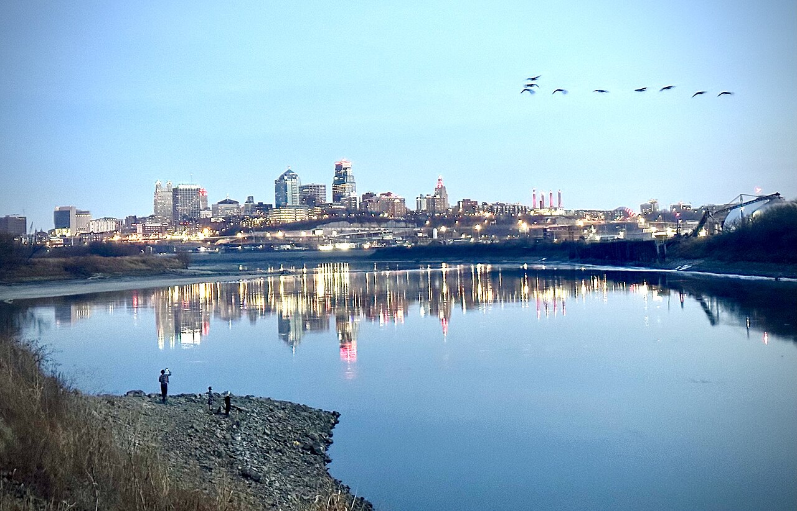

01 · Fairfax / Kaw Point, Kansas City, KS
Kaw Point Riverfront Park
Riverside park where the Kansas (Kaw) River meets the Missouri, with skyline views of downtown Kansas City, Missouri.
Kaw Point Park is a 10-acre wooded park in Kansas City, Kansas, on the Kansas–Missouri river confluence. The Lewis and Clark Expedition camped here June 26–28, 1804; the park is a Lewis and Clark National Historic Trail site with an amphitheater, a memorial to the area's Native tribes, and views across to downtown Kansas City, Missouri.
Tip: The confluence in 1804 was likely about a quarter mile north of today's point, because the rivers have moved. Riverbanks can be muddy after rain.
Photo: Smuckola, CC BY-SA 4.0, via Wikimedia Commons
Sources: nps.gov · kawpointpark.org · en.wikipedia.org
Find a stay in Kansas City →